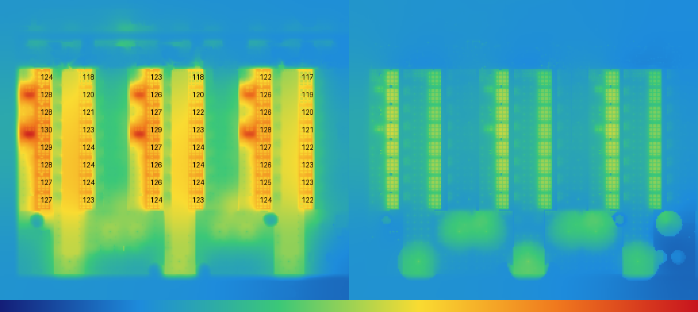
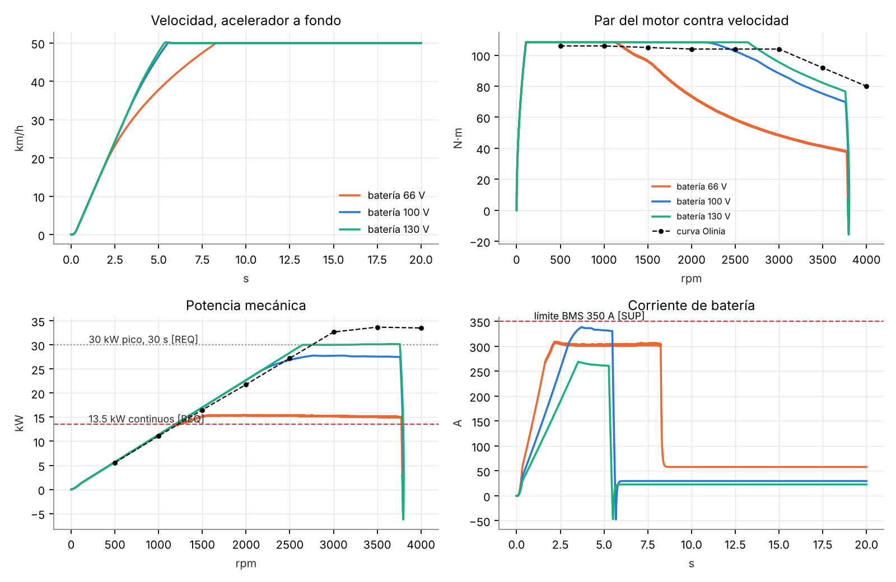

La unidad de control de motor de Olinia, diseñada en Hermosillo The motor control unit for Olinia, designed in Hermosillo
Equipo Yolotl, Instituto Tecnológico de Hermosillo (TecNM). Diseñamos desde cero el inversor, los drivers, los sensores, el control y las protecciones que mueven el motor del vehículo eléctrico mexicano, y los probamos en simulación. Proyecto para InnovaTecNM 2026. Team Yolotl, Instituto Tecnológico de Hermosillo (TecNM). We designed from scratch the inverter, gate drivers, sensors, control and protections that drive the motor of Mexico's electric car, and tested them in simulation. A project for InnovaTecNM 2026.
Entre la batería y el motorBetween the battery and the motor
Olinia es el proyecto del vehículo eléctrico mexicano: un auto pequeño, accesible y pensado para la ciudad. Dentro de InnovaTecNM 2026, Olinia lanzó retos a los Tecnológicos del país; el nuestro es diseñar la MCU (Motor Control Unit, unidad de control de motor).Olinia is Mexico's electric vehicle project: a small, affordable car built for the city. Through InnovaTecNM 2026, Olinia set challenges for the country's Tecnológicos; ours is to design the MCU (Motor Control Unit).
La batería entrega corriente directa, pero el motor de imanes permanentes (PMSM) necesita corriente alterna trifásica cuya frecuencia y amplitud cambian con la velocidad. La MCU hace esa conversión miles de veces por segundo, obedece lo que pide la computadora del vehículo (VCU) por CAN, recupera energía al frenar y protege al auto y a las personas ante cualquier falla.The battery supplies direct current, but the permanent-magnet motor (PMSM) needs three-phase alternating current whose frequency and amplitude change with speed. The MCU performs that conversion thousands of times per second, follows the requests of the vehicle computer (VCU) over CAN, recovers energy when braking, and protects the car and its occupants if anything fails.
Una analogíaAn analogy
La batería es un tanque de agua a presión y el motor es una rueda hidráulica. La MCU es el conjunto de válvulas que abre y cierra 16 000 veces por segundo para que el agua empuje la rueda justo en el momento correcto, con la fuerza que pide el pie del conductor.The battery is a pressurized water tank and the motor is a water wheel. The MCU is the set of valves that opens and closes 16,000 times per second so the water pushes the wheel at exactly the right moment, with the force the driver's foot is asking for.
Al frenar, la rueda empuja el agua de regreso al tanque: eso es la regeneración.When braking, the wheel pushes water back into the tank: that is regeneration.
Lo que pide Olinia y lo que diseñamosWhat Olinia asks for and what we designed
Cada dato dice de dónde sale. Nada de esta página está medido en laboratorio todavía.Every figure says where it comes from. Nothing on this page has been measured in the lab yet.
| ParámetroParameter | ValorValue | OrigenSource |
|---|---|---|
| Bus de bateríaBattery bus | 60–140 V CD | Olinia |
| Potencia continuaContinuous power | 13.5 kW | Olinia |
| Potencia picoPeak power | 30 kW · 30 s | Olinia |
| Corriente nominalRated current | 130 A | Olinia por aclararto clarify |
| Motor | PMSM trifásico con regeneraciónThree-phase PMSM with regeneration | Olinia |
| Sensor de posiciónPosition sensor | Resolver (seno/coseno)Resolver (sine/cosine) | Olinia |
| ComunicaciónCommunication | CAN con la VCUCAN to the VCU | Olinia |
| ProtecciónIngress protection | IP67 | Olinia |
| Envolvente máximaMaximum envelope | 220 × 210 × 144 mm | Olinia |
| Nuestro gabineteOur enclosure | 220 × 209.5 × 142.6 mm | diseñodesign |
| ControlControl | FOC (control orientado a campo)FOC (field-oriented control) | diseñodesign |
| ConmutaciónSwitching | 16 kHz · tiempo muertodead time 1 µs | diseñodesign |
| EnfriamientoCooling | Líquido, placa fría de aluminio A356Liquid, A356 aluminum cold plate | diseñodesign |
| Temperatura de unión, MOSFET más calienteJunction temperature, hottest MOSFET | 130 °C @ 13.5 kW · 148 °C @ 30 kW 30 s | simuladosimulated |
| Límite de unión del MOSFETMOSFET junction limit | 175 °C | hoja de datosdatasheet |
Las temperaturas salen del mapa térmico de la placa de potencia con refrigerante supuesto a 65 °C y 8 L/min; Olinia aún no da esos datos. También falta confirmar con Olinia si los 130 A son de fase o de batería.Temperatures come from the power board thermal map, assuming 65 °C coolant at 8 L/min; Olinia has not yet provided these figures. We also still need Olinia to confirm whether the 130 A is phase or battery current.
De corriente directa a un campo que giraFrom direct current to a rotating field
MedirMeasure
Tres sensores leen la corriente de cada fase y el resolver da la posición exacta del rotor.Three sensors read each phase current and the resolver gives the exact rotor position.
Girar la vistaChange frame
Las transformadas de Clarke y Park convierten tres corrientes alternas en dos valores fijos: id (campo) e iq (par).Clarke and Park transforms turn three AC currents into two steady values: id (flux) and iq (torque).
CorregirCorrect
Dos controladores PI comparan id e iq contra el par que pide la VCU y calculan el voltaje necesario.Two PI controllers compare id and iq with the torque the VCU requests and compute the voltage needed.
ConmutarSwitch
La modulación vectorial (SVPWM) traduce ese voltaje en los pulsos de los seis interruptores, 16 000 veces por segundo.Space-vector modulation (SVPWM) turns that voltage into pulses for the six switches, 16,000 times per second.
Tres pisos en 6.6 litrosThree floors in 6.6 liters
Para caber en la envolvente de Olinia apilamos la electrónica: la placa de potencia va sobre la placa fría, el banco de capacitores encima y la placa de control arriba. Las dos placas están ruteadas en KiCad sin conexiones faltantes ni violaciones; falta la revisión del fabricante.To fit Olinia's envelope we stacked the electronics: the power board sits on the cold plate, the capacitor bank above it and the control board on top. Both boards are fully routed in KiCad with no unrouted nets or violations; manufacturer review is still pending.
MicrocontroladorMicrocontroller
TI C2000 automotriz. Su ePWM con Trip Zone apaga los pulsos por hardware.Automotive TI C2000. Its ePWM Trip Zone shuts the pulses off in hardware.
MOSFET 200 V
Ocho en paralelo por cada una de las seis posiciones del puente, encapsulado TOLL.Eight in parallel for each of the six bridge positions, TOLL package.
Drivers aisladosIsolated gate drivers
+15 / −3 V en compuerta, con detección de desaturación.+15 / −3 V gate drive with desaturation detection.
Sensores de corrienteCurrent sensors
Sin contacto (efecto Hall), con salida rápida de sobrecorriente.Coreless Hall-effect, with a fast overcurrent output.
ResolverResolver interface
Excita el resolver y convierte seno y coseno en ángulo y velocidad.Drives the resolver and turns sine and cosine into angle and speed.
Supervisor y CANSupervisor and CAN
Watchdog y vigilancia de voltajes; transceptor CAN automotriz.Watchdog and voltage monitoring; automotive CAN transceiver.
Revisada antes de mandarla a fabricarChecked before it goes to the fab
Revisamos la placa ruteada con sus reglas eléctricas, su calentamiento y su conmutación. Todo es cálculo o simulación sobre el diseño; falta la revisión de fabricación del proveedor.We checked the routed board for electrical rules, heating and switching. All of it is calculation or simulation on the design; the supplier's manufacturing review is still pending.

Mapa térmico a 13.5 kW continuos. Los números son la temperatura de unión de cada MOSFET; el más caliente llega a 130 °C. simuladoThermal map at 13.5 kW continuous. The numbers are each MOSFET's junction temperature; the hottest reaches 130 °C. simulated
- Reglas de diseño (DRC)Design rule check (DRC)0 erroreserrorsSin conexiones faltantes ni violaciones en KiCad.No unrouted nets or violations in KiCad.
- Unión a 13.5 kW continuosJunction at 13.5 kW continuous130.2 °CContra 175 °C del MOSFET. Resistencia térmica efectiva 3.57 K/W.Against the MOSFET's 175 °C. Effective thermal resistance 3.57 K/W.
- Unión a 30 kW por 30 sJunction at 30 kW for 30 s147.8 °CEl pico de la ficha de Olinia, con 27 °C de margen.Olinia's peak rating, with 27 °C of margin.
- Calor en el cobreCopper heating99 WAntes 233 W. Se bajó con barras de cobre, cobre de 2 oz y ventanas en la máscara.Down from 233 W, using copper bars, 2 oz copper and solder-mask windows.
- Reparto entre los 8 MOSFET en paraleloSharing across the 8 parallel MOSFETs1.04–1.07Corriente del más cargado entre el promedio: casi parejo.Busiest device current over the average: nearly even.
- Doble pulso en calienteHot double-pulse test188.6 VPico de voltaje al apagar, contra 200 V del MOSFET.Turn-off voltage peak, against the MOSFET's 200 V rating.
- Separación alto / bajo voltajeHigh / low voltage spacing≥ 3.7 mmEntre redes de alto voltaje hay ≥ 0.69 mm, por eso la placa lleva barniz conformal.Between high-voltage nets there is ≥ 0.69 mm, so the board gets conformal coating.
- Piezas cerca del calorParts near the heat150 °CCerámicos X8R/X8L, laminado de 150 °C y resistencias de mayor potencia.X8R/X8L ceramics, 150 °C laminate and higher-power resistors.
Probado en la computadora antes que en el bancoTested on the computer before the bench
El modelo del motor se ajustó a la curva de par y potencia que nos dio Olinia. Batería, refrigerante y datos térmicos del motor son supuestos hasta que Olinia los confirme. Todo lo de esta sección es simulado, no medido.The motor model was fitted to the torque and power curve Olinia gave us. Battery, coolant and motor thermal data are assumptions until Olinia confirms them. Everything in this section is simulated, not measured.
30 minutos subiendo al 15 % sin el límite de 30 s30 minutes up a 15 % grade without the 30 s limit
Subir al 15 % a 50 km/h pide unos 23 kW en el eje, más que los 13.5 kW continuos. Con el límite de la ficha (30 kW por 30 s) el carro solo aguantaba 50 km/h medio minuto y luego bajaba a 28 km/h. Cambiamos ese límite por uno térmico: la MCU da potencia mientras las temperaturas lo permitan.Climbing a 15 % grade at 50 km/h takes about 23 kW at the shaft, more than the 13.5 kW continuous rating. With the spec-sheet limit (30 kW for 30 s) the car held 50 km/h for only half a minute and then dropped to 28 km/h. We replaced that limit with a thermal one: the MCU delivers power while temperatures allow.
Líneas punteadas: 175 °C, límite del MOSFET, y 160 °C, inicio del derrateo del devanado. Zona sombreada: derrateo desde el minuto 24.Dashed lines: 175 °C MOSFET limit and 160 °C winding derating start. Shaded zone: derating from minute 24.
Ver los datosShow the data
| TiempoTime | km/h | Unión °CJunction °C | Devanado °CWinding °C |
|---|---|---|---|
| 10 s | 41.9 | 109.2 | 72.2 |
| 30 s | 49.7 | 100.9 | 79.8 |
| 1 min | 49.7 | 103.5 | 87.8 |
| 2 min | 49.7 | 105.3 | 99.9 |
| 5 min | 49.7 | 106.9 | 121.1 |
| 10 min | 49.7 | 108.4 | 138.1 |
| 15 min | 49.7 | 109.5 | 147.8 |
| 20 min | 49.7 | 110.6 | 154.8 |
| 25 min | 49.5 | 111.5 | 161.4 |
| 30 min | 45.9 | 108.7 | 161.7 |
49.7 km/h · 22.9 kW · 24 min
A los 24 minutos el devanado del motor llega a 160 °C y el control baja el par al 92 %: termina en 45.9 km/h a los 30 minutos, con el devanado estable en 161.7 °C.At 24 minutes the motor winding reaches 160 °C and the control trims torque to 92 %: it ends at 45.9 km/h after 30 minutes, with the winding steady at 161.7 °C.
- La MCU tiene margen: su unión no pasa de 111.9 °C. Los capacitores llegan a 76 °C.The MCU has margin: its junction stays at or below 111.9 °C. Capacitors reach 76 °C.
- Recorre 24.6 km; la batería baja de 100 % a 7.7 %. Lo que se acaba primero es la batería.It covers 24.6 km; the battery drops from 100 % to 7.7 %. The battery runs out first.
- Falta que Olinia confirme que su motor aguanta unos 23 kW continuos y que su BMS deja sacar unos 250 A sostenidos.Olinia still needs to confirm its motor can take about 23 kW continuously and that its BMS allows about 250 A sustained.
La unión de 112 °C es del modelo promedio del vehículo; el mapa térmico de la placa (130 °C a 13.5 kW) mira el MOSFET más caliente de los 48. Son dos modelos distintos y ambos quedan abajo de 175 °C.The 112 °C junction comes from the vehicle-level averaged model; the board thermal map (130 °C at 13.5 kW) looks at the hottest of the 48 MOSFETs. They are different models, and both stay below 175 °C.
¿Cuánto dura la batería?How far does a charge go?
Batería de 14.7 kWh con 90 % usable [supuesto]. Distancia con una carga según el tipo de manejo.14.7 kWh battery with 90 % usable [assumed]. Distance on one charge for each driving pattern.
| ManejoDriving | ConsumoUse |
|---|---|
| Plano 30 km/hFlat 30 km/h | 49 Wh/km |
| Plano 50 km/hFlat 50 km/h | 65 Wh/km |
| CiudadCity | 85 Wh/km |
| Subida 15 %15 % climb | 486–496 Wh/km |
En la subida casi toda la energía se va en levantar el carro: 27 km al 15 % son unos 4 km de altura. Ir más despacio no cambia los kilómetros que se pueden subir; solo reparte la misma energía en más tiempo. La MCU pierde solo alrededor del 3 %.On the climb nearly all the energy goes into lifting the car: 27 km at 15 % is about 4 km of elevation. Going slower does not change how far you can climb; it only spreads the same energy over more time. The MCU itself loses only about 3 %.
Energía recuperada al frenar de 50 km/h a 0Energy recovered braking from 50 km/h to 0
Frenando a 0.3 g con batería de 100 V. Olinia aún revisa cuánta corriente de carga acepta su batería, así que probamos de 50 a 300 A.Braking at 0.3 g with a 100 V battery. Olinia is still reviewing how much charge current its battery accepts, so we tested 50 to 300 A.
- El bus nunca pasa de 136.1 V en ningún caso (batería de 100 y 130 V).The bus never exceeds 136.1 V in any case (100 and 130 V battery).
- La corriente de fase no pasa del límite de 430 A.Phase current stays within the 430 A limit.
- Cuánto se recupera depende del límite que fije el BMS de Olinia; el resto lo pone el freno hidráulico.How much is recovered depends on the limit Olinia's BMS sets; the hydraulic brake supplies the rest.
Aceleración y lazo de corrienteAcceleration and current loop
Además del modelo en Python, el lazo FOC con el motor y el puente de MOSFET corre en Simulink/Simscape, y el circuito de potencia completo en LTspice.Besides the Python model, the FOC loop with the motor and MOSFET bridge runs in Simulink/Simscape, and the full power circuit in LTspice.


Protecciones que no dependen del softwareProtections that do not depend on software
La regla del diseño: si el programa se traba, el hardware igual apaga el inversor y deja el bus sin energía.The design rule: if the firmware hangs, the hardware still shuts the inverter down and drains the bus.
La salida rápida de cada TLE4972 (0.7 µs típicos según su hoja de datos) activa un flip-flop de falla que corta los pulsos en la Trip Zone del microcontrolador, sin pasar por el programa.Each TLE4972's fast output (0.7 µs typical per its datasheet) sets a fault flip-flop that cuts the pulses through the microcontroller's Trip Zone, bypassing the firmware.
Cada driver UCC21750-Q1 vigila la desaturación del MOSFET y lo apaga solo si detecta un corto franco.Each UCC21750-Q1 driver watches for MOSFET desaturation and turns it off on its own if it sees a hard short.
Aislamiento reforzado entre alto voltaje y control: drivers UCC21750-Q1, medición del bus con AMC1311-Q1 y fuentes aisladas UCC14141-Q1.Reinforced isolation between high voltage and control: UCC21750-Q1 drivers, AMC1311-Q1 bus sensing and UCC14141-Q1 isolated supplies.
Resistencia activa de 50 Ω con un driver siempre habilitado: con el banco de 1.68 mF, τ ≈ 84 ms. Respaldo pasivo de 20.4 kΩ: τ ≈ 34 s.Active 50 Ω resistor with an always-enabled driver: with the 1.68 mF bank, τ ≈ 84 ms. Passive 20.4 kΩ backup: τ ≈ 34 s.
Por software a 145 V y comparador por hardware a 160 V (valores de trabajo, por confirmar con el voltaje máximo real de la batería).Software at 145 V and a hardware comparator at 160 V (working values, to be confirmed against the battery's real maximum).
El supervisor TPS65381A-Q1 vigila al microcontrolador con watchdog. La precarga y los contactores los maneja la VCU de Olinia.The TPS65381A-Q1 supervisor watches the microcontroller with a watchdog. Precharge and contactors are handled by Olinia's VCU.
Qué pasa cuando algo falla a 50 km/hWhat happens when something fails at 50 km/h
Simulamos las fallas más peligrosas con el motor ajustado a la curva de Olinia. Encontraron tres errores de diseño, que ya corregimos en los modelos, y dos requisitos nuevos.We simulated the most dangerous faults with the motor fitted to Olinia's curve. They found three design errors, now fixed in the models, and two new requirements.
| FallaFault | Resultado simuladoSimulated result | EstadoStatus |
|---|---|---|
| Cortocircuito activo (ASC)Active short circuit (ASC) | 620 A sostenidos y hasta 1324 A al entrar; la unión llega a 175 °C en 6 s. No sirve para este motor.620 A sustained and up to 1324 A on entry; the junction reaches 175 °C in 6 s. Not usable with this motor. | descartadoruled out |
| Abrir los 6 transistoresOpen all 6 switches | 0 A mientras la fuerza contraelectromotriz sea menor que la batería. Con batería de 60 V arriba de ~32 km/h, hasta 318 A a la batería y −61 N·m de frenado.0 A while back-EMF is below the battery voltage. With a 60 V battery above ~32 km/h, up to 318 A into the battery and −61 N·m of braking. | con condiciónconditional |
| Par cero controladoControlled zero torque | Necesita como máximo 344 A (60 V, 60 km/h), abajo del límite de 430 A.Needs at most 344 A (60 V, 60 km/h), below the 430 A limit. | pasapasses |
| Pérdida del resolverResolver loss | Detectando en 5 ms la corriente sube a 477 A. Con un observador de flujo de respaldo el par residual queda en −1.9 N·m (100 V) o −9.4 N·m (60 V).Detected in 5 ms, current climbs to 477 A. With a backup flux observer the residual torque is −1.9 N·m (100 V) or −9.4 N·m (60 V). | detectar ≤ 2 msdetect ≤ 2 ms |
| Pérdida de CANCAN loss | Se detecta en 50 ms y llega a par cero 287 ms después del último mensaje.Detected in 50 ms; zero torque 287 ms after the last message. | pasapasses |
| Se abre el contactor regenerandoContactor opens while regenerating | El bus llega a 145–150 V; el sobrevoltaje por software (145 V) actúa antes que el de hardware (160 V).The bus reaches 145–150 V; software overvoltage (145 V) acts before the hardware trip (160 V). | pasapasses |
| Remolque con el control apagadoTowing with control off | La fuerza contraelectromotriz pasa de 160 V a 81 km/h y de 200 V a 101 km/h.Back-EMF exceeds 160 V at 81 km/h and 200 V at 101 km/h. | no remolcar > 70 km/hno towing > 70 km/h |
Todo simulado con batería, BMS y datos térmicos supuestos. Validar la seguridad de verdad requiere el hardware y los datos de Olinia.All simulated with assumed battery, BMS and thermal data. Truly validating safety requires the hardware and Olinia's data.
Qué hace la MCU según quién siga vivoWhat the MCU does depending on what still works
Falla con el control vivoFault with control alive
Sobrevoltaje, CAN, temperatura o aviso del BMS: par cero controlado. Nunca cortocircuito activo.Overvoltage, CAN, temperature or a BMS warning: controlled zero torque. Never an active short circuit.
Falla del resolverResolver fault
Usa el ángulo del observador de flujo que corre siempre en paralelo y sigue con par cero controlado.Switch to the angle from the flux observer that always runs in parallel, then controlled zero torque.
Sin controlNo control
Microcontrolador caído, watchdog o comparador de 160 V: se abren los seis transistores por hardware.Microcontroller down, watchdog or the 160 V comparator: the hardware opens all six switches.
Dónde estamos, sin adornosWhere we are, plainly
Hoy el proyecto está en TRL 2: concepto diseñado y simulado. La meta es TRL 3, una prueba de concepto en laboratorio.Today the project is at TRL 2: the concept is designed and simulated. The goal is TRL 3, a proof of concept in the lab.
Esquemático, dos placas ruteadas y verificadas, gabinete.Schematic, two routed and checked boards, enclosure.
Control, térmica, autonomía y fallas en Python, Simulink, LTspice y PSpice.Control, thermal, range and faults in Python, Simulink, LTspice and PSpice.
Siguiente paso: TRL 3.Next step: TRL 3.
Fuera del alcance actual.Outside the current scope.
Propuesta enviada a InnovaTecNM y primeros requisitos.Proposal submitted to InnovaTecNM and first requirements.
Se elige control FOC, el mismo para el prototipo y el diseño final.FOC control chosen, the same for the prototype and the final design.
Primera simulación del control y la regeneración a 13.5 kW.First simulation of control and regeneration at 13.5 kW.
Olinia confirma motor PMSM, 13.5 kW continuos, 30 kW pico, resolver y CAN.Olinia confirms PMSM motor, 13.5 kW continuous, 30 kW peak, resolver and CAN.
Selección de piezas automotrices y análisis de conmutación en PSpice.Automotive parts selected and switching analysis in PSpice.
Llega la ficha de 220 × 210 × 144 mm; arranca el rediseño en tres pisos.The 220 × 210 × 144 mm spec arrives; the three-floor redesign begins.
Simulink nivel 2 pasa en MATLAB, el esquemático se valida en LTspice y se rutean las dos placas.Simulink level 2 passes in MATLAB, the schematic is validated in LTspice, and both boards are routed.
Verificación térmica y eléctrica de la placa de potencia; simulaciones de fallas, subida larga y autonomía.Thermal and electrical check of the power board; fault, long-climb and range simulations.
Entrega a InnovaTecNM 2026.Submission to InnovaTecNM 2026.
Revisión de fabricación con el proveedor de PCB, datos finales de Olinia y prueba de concepto en laboratorio.Manufacturing review with the PCB supplier, final data from Olinia, and a lab proof of concept.
Yolotl
Yolotl significa "corazón" en náhuatl. Somos estudiantes del Instituto Tecnológico de Hermosillo, del Tecnológico Nacional de México.Yolotl means "heart" in Nahuatl. We are students at the Instituto Tecnológico de Hermosillo, part of Mexico's Tecnológico Nacional de México.
Jesús Luis Salazar Miranda
Electrónica: potencia, control, firmware, simulación y seguridad eléctrica.Electronics: power, control, firmware, simulation and electrical safety.
Miguel Ángel Hernández Sáenz
Electrónica: potencia, control, firmware, simulación y seguridad eléctrica.Electronics: power, control, firmware, simulation and electrical safety.
Mariana Lugo Pérez
Industrial: costos, lista de materiales, manufactura, proveedores y normas.Industrial: costs, bill of materials, manufacturing, suppliers and standards.
Vivian Danahé Moroyoqui Juárez
Industrial: costos, lista de materiales, manufactura, proveedores y normas.Industrial: costs, bill of materials, manufacturing, suppliers and standards.
Asesores: Maestra Betzaida y Maestro Grijalva (ITH). Con asesoría técnica de Olinia.Advisors: Maestra Betzaida and Maestro Grijalva (ITH). With technical guidance from Olinia.
HablemosGet in touch
Si eres jurado, empresa o estudiante y quieres saber más del diseño, escríbenos.If you are a judge, a company or a student and want to know more about the design, write to us.
- CorreoEmail
- yolotl.ith@gmail.com
- EscuelaSchool
- Instituto Tecnológico de Hermosillo, TecNM · Hermosillo, Sonora
- ConcursoCompetition
- InnovaTecNM 2026 · reto OliniaOlinia challenge